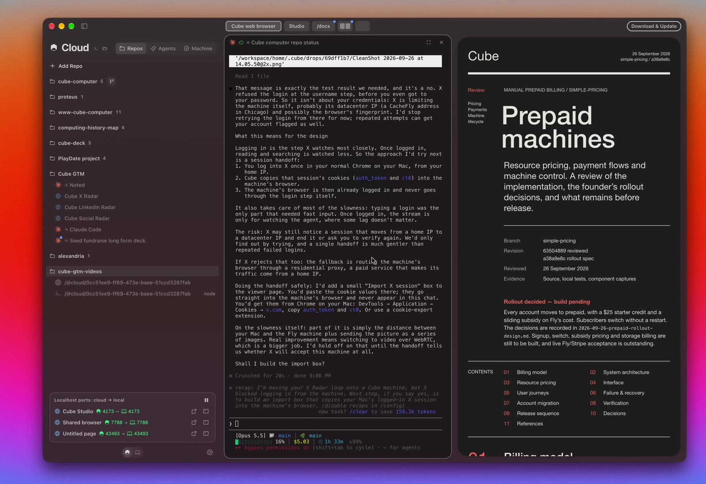
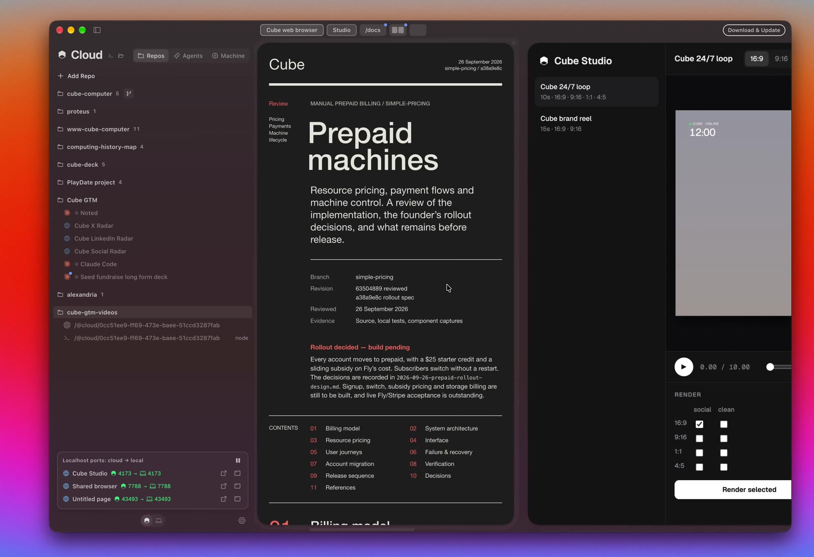
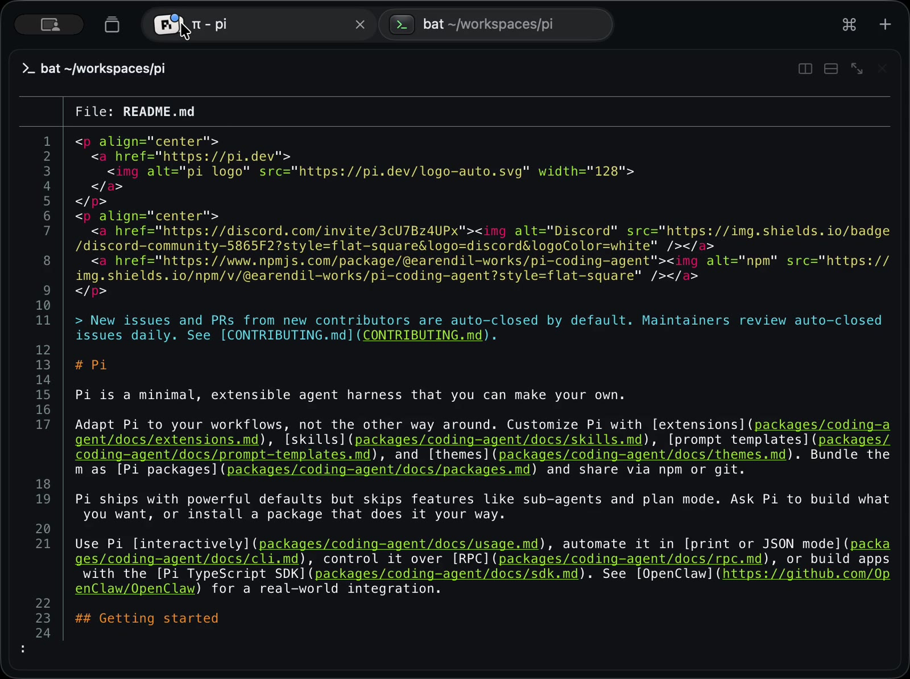
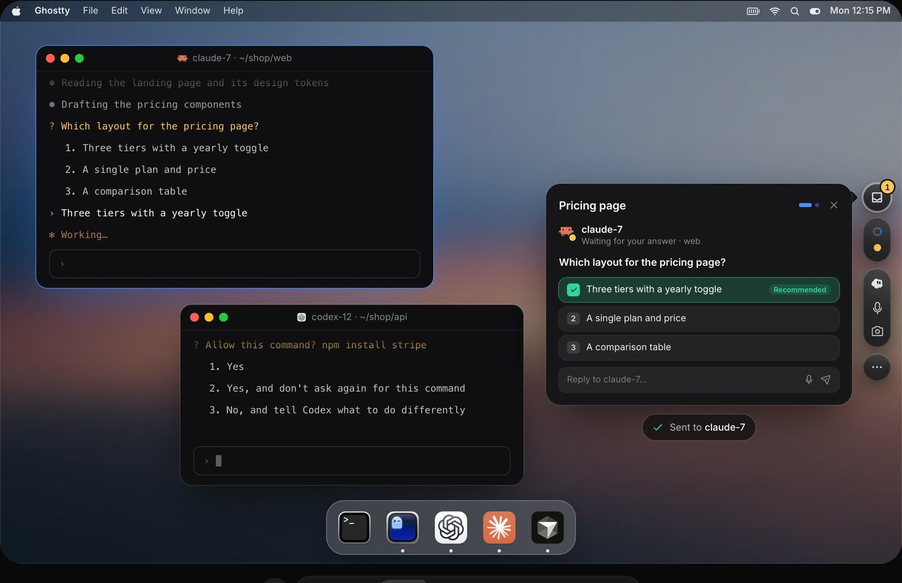
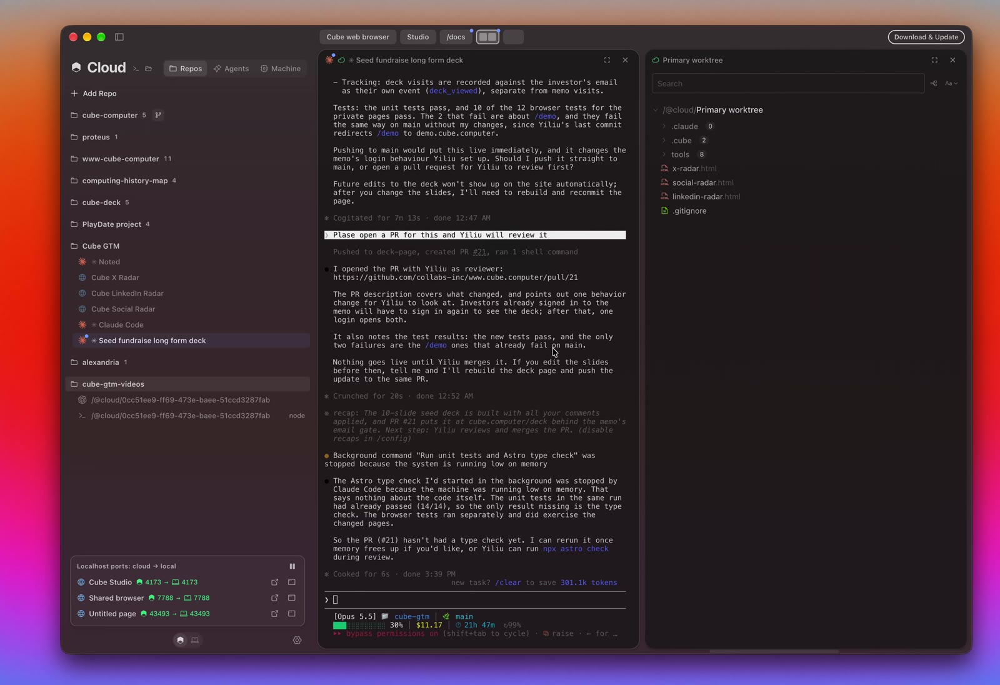
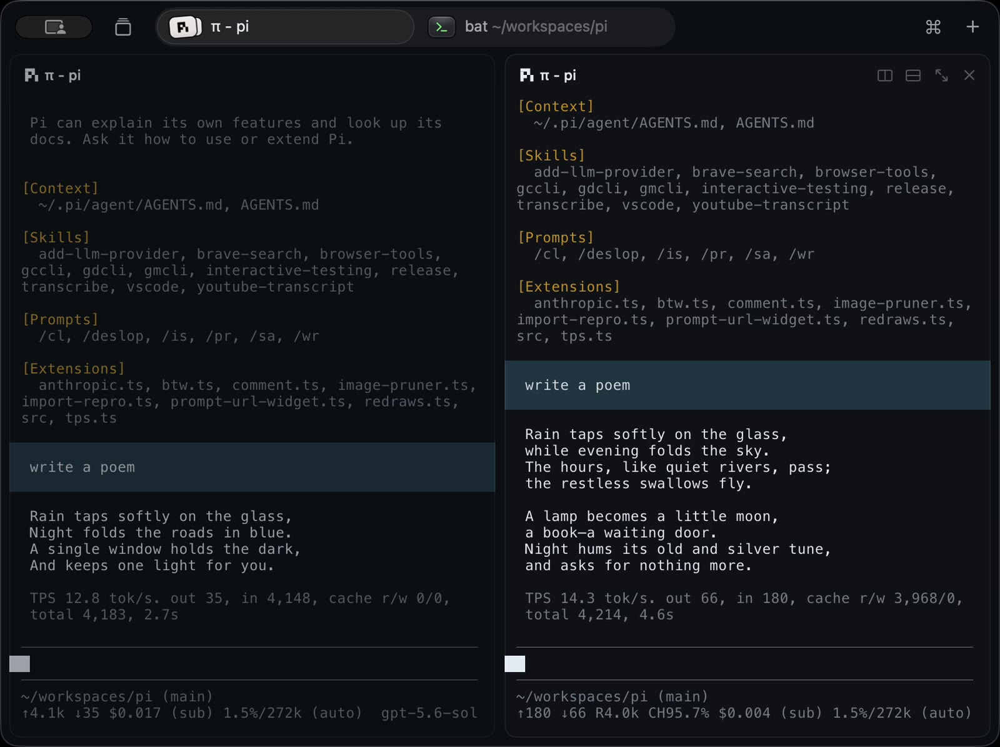
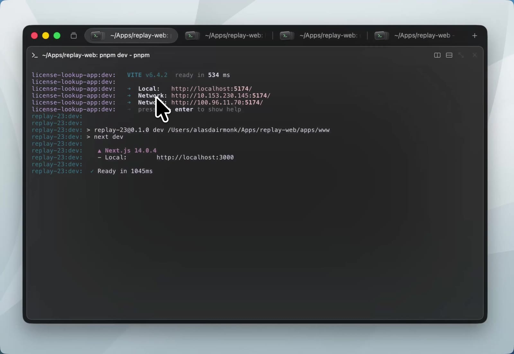
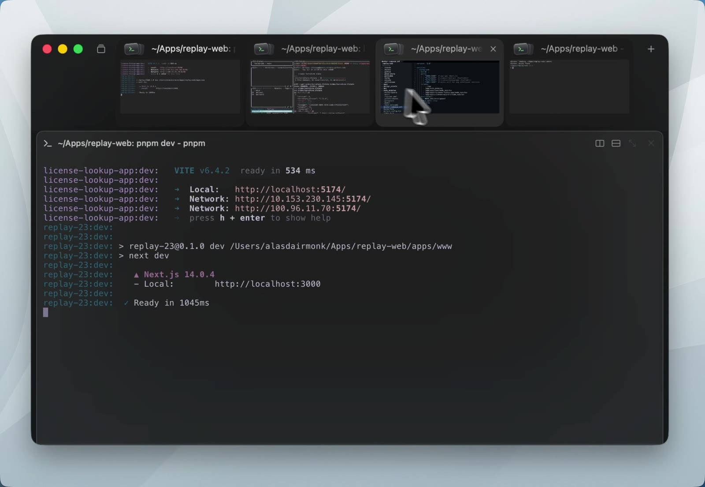
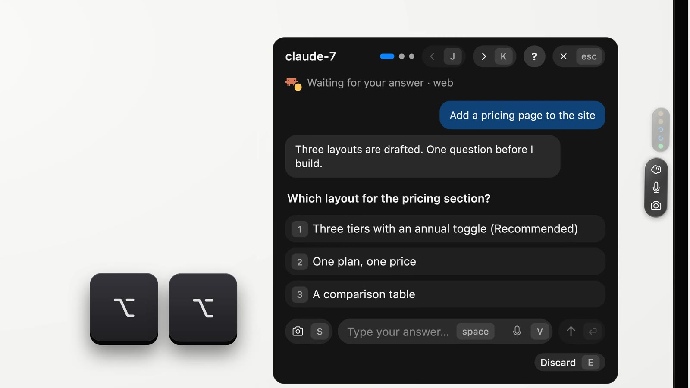
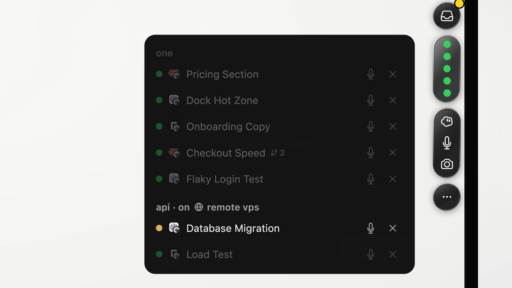

Herdlight
A native macOS and iOS app that gives herdr a modern interface. herdr stays the backend: it owns every workspace, tab, pane, terminal and agent. The app draws them, drives them, and keeps as little state of its own as it can.
The problem
People run many coding agents at once, often on several machines. herdr keeps them alive and knows when each one is working, blocked or done. But its interface is a terminal UI: one machine at a time, keyboard-first, and nothing when you are away from the terminal or on your phone.
What we build
One app for Mac, iPad and iPhone that shows every herdr machine at once: a sidebar of machines and agents, a swipeable strip of tabs with resizable panes, terminal, agent, web and plugin panes, a chat view for agents, floating panes, and status pills on the Mac screen edge.
1Machines, tabs and panes
A glass sidebar of machines and workspaces, a glass tab bar, and a strip that pages sideways through tabs. Try it.
Try: scroll the main area sideways (trackpad or shift+wheel). Every tab whose page is visible lights up, and the glass marker follows. Scroll the sidebar sideways, or click the dots, to switch machines. Press ⧉ 1 to show a floating scratch terminal, drag it by its header, and resize it from the corner. The diff and history tabs are plugin panes.
Machines
Every herdr session on this Mac plus every SSH machine, all connected at once. One sidebar page per machine, swiped sideways like Arc's spaces.
Status everywhere
◔ working, ▲ needs you, ✓ finished, on sidebar rows, tab capsules and the status area. The status area covers every machine.
Panes
Panes follow herdr's split layout. Drag dividers to resize, zoom a card to fill the window, drag cards to swap, split, move or float them.
2Pane kinds and plugins
Every pane kind is a plugin. Terminal, Agent and Web page are native core plugins. Git history, Diff and Markdown are core plugins written in TypeScript with the same public API that anyone can use.
Web page
Any address, rendered natively next to your terminals. Remote localhost works through SSH forwards.
Your own plugins
TypeScript and React with a component kit (List, Detail, Markdown, Diff, Code, Form, Actions) that draws as native SwiftUI, in the Raycast style. Install from a git URL or link a folder for live reload.
Restored from herdr
Every plugin pane is a real herdr pane with a label like hl:git-history#k3f9q2 main. A fresh app on any device rebuilds it from that label.
3Chat view
Switch any pane between its terminal and a chat view. Agents show their own transcript; a blocked agent shows its prompt with answer buttons.
- Messages come from the agent's own transcript file (pi, Claude Code, Codex), tailed live on its machine.
- Replies go through herdr's
agent.prompt, which refuses while a dialog is open, so a message never approves a prompt by accident. - Answer buttons send a key only if the agent is still blocked and the prompt is unchanged.
- Every other pane gets a "screen text" chat, so any pane can switch.
- Notifications and a Dock badge when an agent needs you or finishes.
4Floating pills (macOS)
While you work in another app, a black pill on the screen edge shows a glyph per agent. A blocked or finished agent opens a small card with its output and a reply box, without taking your keyboard.
Try: click the pill on the right edge to open the list, then click a row to open that agent's card. Press a simulate button: the card peeks out without taking focus and shrinks back after a few seconds if the pointer never enters it. On a peeked card the first click only activates it; the next click sends the key.
5iPhone and iPad
iPad uses the Mac layout. iPhone shows one pane per page, opens agents in chat, and has a key bar for terminals.
- One chip per pane, in tab order; "|" separates tabs.
- Agents open in chat, which needs no terminal stream, so the Mac keeps control of the terminal.
- A terminal view watches while another device controls the pane. The first key press takes control.
- Floating panes show as one more tab, "Floating".
- The look is dark only, everywhere: an opaque near-black window, opaque cards, and Liquid Glass on the chrome.
6Inspirations
Cube Computer for the sideways strip, Superlogical Rex for quiet tabs, Arc for machine pages, and One for the floating agent pill.




| From | We take |
|---|---|
| Cube | the sideways strip of tab pages; tabs lit while visible; web pages as panes; a sidebar tree with kind icons |
| Rex | status inside the tab; × on hover; dimmed unfocused panes; glass on chrome only (we keep the window opaque, so the app is fully dark) |
| Arc | one sidebar page per machine, swiped sideways |
| One | the edge pill with a glyph per agent; a card with the agent's output and a reply box |
More frames






Lessons from about 25 existing herdr clients
| Lesson | Evidence |
|---|---|
| Clients that keep their own model of tabs or layout drift from herdr. | herdrm, paca, moo, allward; bigtty mirrors herdr and stays small |
| herdr's private client socket breaks on herdr upgrades. | whip, uHerdr and rai pin protocol 22 |
herdr terminal session control is the public way to stream one pane. | bigtty, paca, termote, pairfob |
| Chat views read the agent's own transcript file. | herdr-web-ui, collie, termote |
| Parsing approval prompts per agent costs a lot to maintain. | herdr-web-ui has 27 regex responders |
| Daemons on the machine add install steps; SSH already does auth. | herdr-connect, pairfob, collie vs Heeler and herdr itself |
| Glass behind terminal text hurts reading. | paca removed it after two days |
| libghostty draws terminals better than SwiftTerm on iOS. | Heeler measured both |
7UI details
How each part looks and behaves. The architecture sections that follow explain how it works.
Window, sidebar and tab bar
- Sidebar (macOS 26's floating glass sidebar): the machine's name, the machine pages (swiped sideways), fixed page dots and
+(add a machine), and the fixed status area at the bottom. - Machine page: herdr's workspaces in herdr's order. A workspace expands to its agent panes (icon, name, glyph and word), its web and plugin panes, and one "Terminals (n)" row. A collapsed workspace shows how many agents need you. Clicking a workspace selects it in the app only.
- Tab bar: one glass capsule per herdr tab, with the icon of the pane last selected in it and the tab label (folder part dimmed). Status glyphs ◔ ✓ ▲. Hover shows ×.
+makes a new tab;⧉ nshows or hides floating panes. - Strip: one page per tab. Cards follow herdr's split tree. Each card header has the kind icon, title, view switch (chat|term on agents, plugin|term on plugins), zoom and close. Controls show on hover on macOS and always on iOS; every action is also in the context menu and menu bar. Unfocused cards are slightly dimmed.
- Swiping: two fingers on a trackpad, one finger on iOS; pages snap. First visit to a machine shows herdr's focused workspace; later visits show the last one picked. Keys: ⌃⌥1…9 machines, ⌘1…9 tabs, ⌘⇧[ ] step, ⌘W closes a pane, ⇧⌘W the window.
Drag and drop, zoom
| Drop a card on | Result |
|---|---|
| the centre of a card in the same tab | swap the two panes |
| an edge of a card in another tab | split there |
| a tab capsule (hold to page to it) | move into that tab |
| a sidebar workspace / empty sidebar space | new tab there / new workspace |
the ⧉ button | float the pane |
- The card menu has the same moves (Move to ▸, Float); that is the only path on iPhone. A pane cannot move to another machine.
- Zoom: the zoom button, a double-click on the header, or ⌘⇧↩ draws the card over the whole window under the tab bar. The same again restores it. Esc is not used, because the program in the pane needs it.
Floating panes and pills
- Floating panes: any pane can float above the strip of its workspace as a card with the normal header plus Dock (⤓). Drag the header to move it or onto a tab to dock it; drag the corner to resize; a click brings it to the front. Layers: strip, zoom layer, floating cards. ⌥⌘F or
⧉ nshows or hides them; hiding never closes. iPhone shows them as a "Floating" tab. - Pill: a black notch-shaped tab on the right screen edge with one glyph per agent across all machines, in a stable order; idle agents get no glyph; past 10 the last glyph reads "+n". One pill with a glyph per agent, not a pill per agent: ten agents would be ten capsules.
- Pill list and card: click the pill for the list grouped by machine and workspace. Click a glyph or row for the agent's card: its last messages (or screen text), the prompt and key buttons when blocked, a reply box, Mark seen, Open in app, ✕.
- Peek: a newly blocked or finished agent's card slides out without taking the keyboard and shrinks back after 8 s unless the pointer enters it. The first click on a card only activates it. Esc closes, ⌘↩ opens the app. Opaque near-black, no glass.
Add a machine, states, theme, accessibility
- Add a machine (macOS): the app opens a terminal card on This Mac and types
herdr machine add <target>, where herdr asks about host keys, passwords and installing itself. iOS saves the target, shows the public key to copy intoauthorized_keys, and connects. - Theme: dark only. Opaque near-black window (
#0e0f12), opaque cards, dark-tinted glass on the sidebar and tab bar. Terminals use a dark palette; web pages are toldprefers-color-scheme: dark. - Accessibility: every swipe has a keyboard path, a menu path and a button. Status is always a glyph plus a word. Reduce Motion turns off the morph, page animations and the pill's slide.
| State | What the user sees |
|---|---|
| herdr missing / older than 0.9.3 / newer | the install command / "herdr 0.9.3 or newer is needed" / a thin banner |
| herdr updated but not restarted | "Restart herdr on devbox" |
| server not running / SSH failed / Local Network denied | Start herdr / ssh's message / where to allow access |
| connection lost | cards grey out; reconnect; fresh snapshot |
| pane in use on another device | the content and "In use elsewhere · Take back" |
| web address set by someone else | "Open ‹url›?" |
| plugin not installed on this device / not responding | the plugin id and argument with Show placeholder (on macOS also "Install from ‹source›", marked as suggested by the machine) / "not responding · Reload" |
8Architecture
Views read from one HostStore per machine. Each HostStore runs commands on its machine through one tiny protocol, Exec. Plugin cards run in their own JavaScript VMs.
App · SwiftUI · macOS + iOS
Exec.run(argv) → stdin / stdoutmacOS · ProcessExec(prefix)
[]remote: [ssh -F /dev/null … -S ctl target --]iOS · CitadelExec
Machine · herdr + standard tools
herdr remote-api-bridge → herdr.sockherdr terminal session control → framestail -F → chatgit, cat → plugin data| Piece | Platform | Job |
|---|---|---|
HerdrKit | both | Exec, call(), events, snapshot decoding, split-tree rebuild, label parser, transcript parsers, the remote command envelope |
ProcessExec / CitadelExec | macOS / iOS | run a command locally or over SSH |
HostStore | both | one per machine: snapshot, events, streams, seen state |
PaneViewRegistry | both | owns terminal views, web pages and plugin cards, so scrolling never destroys them |
PluginRegistry / PluginHost | both | manifests and consent / one JavaScriptCore VM per plugin card and the bridge to the kit |
9Talking to herdr
One primitive per machine: run a command and talk to its stdin and stdout. Requests use herdr's own remote-api-bridge; live panes use terminal session control.
The primitive and the remote command envelope
protocol Exec { func run(_ argv: [String]) async throws -> Channel }
# every remote command, whatever the login shell (bash, zsh, fish):
sh -c 'eval "$(printf %s "$1" | base64 -d)"' sh <BASE64 of the POSIX command>- This Mac:
Process, withPATH,SSH_AUTH_SOCKandXDG_*read once from$SHELL -lic(3 s timeout, parsed after a marker).HERDR_*is removed from children. - Remote on macOS:
ssh -F /dev/null -o ControlMaster=no -o BatchMode=yes -o ProxyCommand=/usr/bin/false -S <ctl> <target> --, which never opens a second connection. iOS: a Citadel exec channel. - Base64 passes through every shell unchanged, so no data is ever pasted into a shell string.
- Commands that ignore stdin (
tail -F,observe) are wrapped so closing the channel ends them and frees the SSH session. - herdr's path is resolved once per machine (
~/.local/binand common spots).remote-api-bridge --checkmust printherdr-api-bridge-v1. Below 0.9.3: refuse; newer protocol: banner. Every herdr argv carries--session.
Requests and events
call()runsherdr --session S remote-api-bridge, writes one JSON line, reads one reply (herdr answers one request per connection). 18 ms median, 130 ms p95 locally, plus network.- One long-lived bridge per machine carries
events.subscribe: workspace, tab, pane and layout events listed explicitly (no wildcards), status events only for agent panes, no focus events. - Any event means "re-read the snapshot". The stream is reopened, then a snapshot read, when agent panes change, on
events_lostand onpane_not_found. A 30 s ping checks liveness. - Snapshots are applied to stable observable objects. Ids are scoped by machine.
Live panes and who controls them
herdr terminal session control <terminal_id> --cols C --rows R [--takeover]
stdout → {"type":"terminal.frame","width":C,"height":R,"full":true,"bytes":"<base64 ANSI>"}
stdin ← terminal.input · terminal.resize · terminal.scroll · terminal.mouse · terminal.releasetypes and resizes; the phone watches or uses chat
on the phone or iPad (
--takeover) →← first key press on the Mac, or Take back
the Mac watches: "In use elsewhere · Take back"
Streaming rules and how a stream ends
- Streams: the selected tab's panes plus shown floating cards, on the selected machine. Neighbour tabs show each card's last image during a swipe.
- Open as control without takeover; watch if refused; take over on the first key press or Take back. Nothing else takes control: a watcher stays a watcher until its user acts. A device releases the pane when it leaves the terminal view.
- Card size ÷ cell size gives cols × rows; the old frame stays until herdr's full frame at the new size arrives. Streams are opened by
terminal_id, so they survive moves. - An iPhone watches at a fixed 160×50, scaled to fit, because herdr does not report PTY columns.
| Reason contains | The app |
|---|---|
already has an attached client | watches; shows Take back |
taken over | watches; never takes back by itself |
not found / exited | drops the card; waits for the snapshot |
live update | backs off, pings, reopens everything |
| handshake error (exit 1) | "Restart herdr on ‹machine›" |
Writes: every user action is a herdr call
| Action | herdr call |
|---|---|
| New workspace / tab / split | workspace.create / tab.create / pane.split (with the source pane's cwd) |
| Drag a divider | layout.set_split_ratio on release, 0.1–0.9 |
| Swap / move | pane.swap / pane.move; changed:false shows herdr's reason |
| Float or dock | pane.move into or out of the hl:float tab |
| Reorder / close / rename | tab.move, workspace.move / *.close / *.rename |
Every create and move uses focus:false. The app waits for the event and snapshot; it never patches its own state. It never calls herdr's focus methods or pane.zoom.
10Machines and SSH
On macOS the machine list is herdr's and SSH is the system ssh. On iOS the app saves machines and uses Citadel.
macOS
Machines: herdr session list (the default session always, others while running) plus herdr machine list. One ControlMaster per machine, started on purpose, so there is one prompt per machine. Forwarding is off. A bundled askpass script shows password prompts.
iOS
Machines in UserDefaults. A Secure Enclave key that cannot leave the phone. Host keys pinned on first use. The Mac is reached like any machine through Remote Login, over LAN or Tailscale.
ssh -M -N -f -o ControlPersist=10m -o ServerAliveInterval=20 -o ForwardAgent=no -o ForwardX11=no \
-o ClearAllForwardings=yes -S ~/Library/Caches/hl/<h8> devbox # start once
ssh -S ~/Library/Caches/hl/<h8> -O check devbox # wait for it
ssh -F /dev/null -o ControlMaster=no -o BatchMode=yes -o ProxyCommand=/usr/bin/false \
-S ~/Library/Caches/hl/<h8> devbox -- sh -c '…' sh <BASE64> # later runs: no fallback, no forwardsDetails
<h8>is 8 hex characters of a hash of the machine id, so the socket path fits the 104-byte limit even for long user names. The folder is per user, mode 0700.- After a wake or network change:
pingwith a 5 s timeout; on timeoutssh -O exitand restart the master. - Local Network privacy (macOS 15+): the app declares the usage string and opens an
NWConnectionto a LAN address first, so the system asks once. - All machines keep their control plane open; only the selected machine streams terminals. OpenSSH allows 10 sessions per connection: 1 is reserved for events and 3 for requests and ping; streams, chat tails and plugin calls share the other 6, focused card first. A card without a session shows Retry.
- Checks on connect: resolve herdr,
--check,ping, offer Start herdr (nohup herdr server &) if needed,integration.list, snapshot, events. - iOS keeps connections for about 30 s in the background, then reconnects and re-reads the snapshot on return.
11Layout and sizing
herdr owns the split tree and its ratios. The app rebuilds the tree from the snapshot, draws it, and sends a new ratio when you let go of a divider. The app stores no sizes.
"panes":[ p1, p3, p2 ], // depth-first
"splits":[
{"id":"split_0_root","direction":"right",
"ratio":0.55},
{"id":"split_1_1","direction":"down",
"ratio":0.50}]├─ p1
└─ split down 0.50
├─ p3
└─ p2
root, then 0 = first child, 1 = second.drag a divider…Zoom, PTY size, selection and "seen"
- If the rebuilt tree's leaf count differs from the pane count, the app falls back to
layout.export. - Zoom is the app's own: herdr's
pane.zoommoves herdr's focus, marks the tab seen and blocks moves. - PTY size: while our control stream is attached, herdr locks the PTY to our card's size. The frame's width and height are the real size.
- Selection lives in memory plus
@SceneStorage. The app never calls herdr's focus methods, because each one moves every attached herdr TUI. - Seen is tracked per agent: the first sighting counts as seen, and viewing the pane records the current
completion_seq.
12Plugin system
Every pane kind comes from one registry. Plugins are TypeScript and React written against our component kit. Each card runs React in its own JavaScriptCore VM, and native SwiftUI draws the result.
Native
Real SwiftUI lists, text selection, VoiceOver, keyboard and context menus. One look by construction.
Light
About 3 MB per card, measured. A 500-row update takes ~2 ms even without the JIT, as on iOS. A web view costs 120–200 MB.
Contained
The JavaScript has no DOM, network, file system or require: only what the app injects. Repository text is drawn as text and can never become script. With exec a plugin can still act on its pane's machine (see Security).
Everything is a plugin
| Plugin | Kind | UI | herdr marks the pane with |
|---|---|---|---|
| terminal | core | native terminal | nothing (the default) |
| agent | core | native terminal + chat view | nothing (herdr sets pane.agent) |
| web | core | native web view | web:<url> |
| git-history, diff, markdown | core | the kit, public API | hl:<plugin>[/<pane>]#<iid> <arg> |
| your plugins | installed | the kit, public API | hl:<plugin>#<iid> <arg> |
Core native plugins have a manifest with a native field instead of a JS entry, so a terminal costs no JavaScript. herdr's own TUI plugins are not part of this system; a pane a herdr plugin opened shows as a terminal.
The options we compared
| Option | Pros | Cons |
|---|---|---|
| React → JSON → native SwiftUI (chosen; Raycast 1.x's model) | truly native; ~3 MB per card; the JS reaches only the injected API; one look | only our components; DOM and Node npm packages do not work; we version the kit |
| React in a web view with a CSS kit | any npm package; least work | 120–200 MB per card; an imitation look; HTML from repositories can become script |
| React Native | React to native | two forks, a large dependency, still needs our kit |
| Native Swift plugins | fully native | impossible on iOS; a signing exception on macOS; in our process |
| Apple ExtensionKit | sandboxed native views | iOS hosts only our own extensions; each author ships an app |
Plugins target a component set, not a DOM, so the renderer can change later without breaking them. A <WebView> component for custom drawing (a commit graph) comes when a plugin needs it.
Components and the API
| Component | Drawn as |
|---|---|
List, List.Section, List.Item, List.EmptyView | SwiftUI List with selection, search, and an optional detail split |
Detail, Markdown | the chat view's Markdown renderer plus a metadata grid; no HTML |
Diff, Code | a native diff parser in the terminal palette; monospaced selectable code |
Form (TextField, TextArea, Dropdown, Checkbox) | SwiftUI Form |
ActionPanel, Action | the header menu, context menus, a ⌘K popover; first action Return |
Icon, Color | SF Symbols and the app's palette |
usePane() → { machine, paneId, cwd, arg, iid, plugin, device }
exec(argv, opts?) → runs on the card's own machine only (needs "exec")
setArg(arg) → renames its own pane; herdr keeps it
useInstanceState(v) → a JSON file on the pane's machine, shared by every device
useSnapshot() → herdr's snapshot, to refresh when an agent finishes
getPreferenceValues · showToast · open(url) after a confirm · Clipboard.copy · useNavigation · usePromise · useExecNot in v1: network, local storage, layout primitives, plugins outside panes, one plugin opening another.
Packages, install and updates
{ "name": "git-history", "version": "0.3.0", "repository": "https://github.com/me/hl-git-history",
"herdlight": { "api": 1, "title": "Git history", "icon": "arrow.triangle.branch",
"platforms": ["macos","ios"], "permissions": ["exec"],
"panes": [{ "name": "history", "title": "Git history", "entry": "src/history.tsx",
"arg": { "title": "Ref or path", "placeholder": "HEAD" } }],
"preferences": [{ "name": "maxCommits", "type": "textfield", "default": "500" }] } }hl-plugin buildruns esbuild per pane entry;hl-plugin devrebuilds on change.- Plugins live in the app (
Application Support/Herdlight/plugins/). Install from a git URL (the app never runs npm;dist/must be built) or link a local folder for live reload with Safari Web Inspector. - Updates are checked daily and applied when the user presses Update; new permissions ask again.
- Cards suspend off screen (timers and exec pause). At most 12 live plugin VMs, least recently used out first.
- Preferences are per device (passwords in the Keychain).
Plugin panes in herdr, state, and restore on a fresh start
hl:git-history#k3f9q2 main ← plugin # instance id, then the argument (what a TUI user reads)
hl:markdown#q2m0zd docs/DESIGN.md
hl:kanban/board#7tt1qe ← a plugin with several pane kinds
web:http://localhost:3000/dashboard- Every plugin pane is a real herdr pane with a placeholder process that prints the title, the marker, the argument and the state path. The label is the truth; the placeholder keeps the slot and shows TUI users what the pane is.
- The instance id lives in the label, because
pane_idchanges on a move andterminal_idon a herdr restart. Cards are keyed by (machine, plugin, iid), so they survive both. - Bigger state lives in
$HOME/.local/state/herdlight/<session>/<plugin>/<iid>.jsonon the pane's machine (a fixed path, so every device finds the same file), written atomically. Ahl_revmetadata token tells other devices to re-read it. Orphan files are cleaned once a day. - A plugin with one pane kind omits
/<pane>. If two panes carry the same iid (a copied label), the lowest pane id keeps the card key and both share the state file.
Security
- One VM per card, bound to its pane's machine.
execgoes only there. The app gives plugins no network, no storage across machines and no HTML. Plugin JavaScript runs only while a card is on screen. - Honest about
exec: a plugin with it can do anything you can do on that machine, including network tools and programs that keep running. The consent sheet says so. open(url)(after a confirm sheet) andClipboard.copywork only while the app is dispatching your click or key press to that card. This is enforced in Swift.- One permission,
exec. Finer rules ("only git") would not hold, so none are offered. - Consent at install, keyed by plugin id and source, in plain words: the plugin can run any command as you on the machine of every one of its panes (including ones others created), use the network from there and leave programs running; on This Mac that includes your files, SSH keys and connections to other machines. Again on a new permission. One more confirm on a plugin's first
execon This Mac, also keyed by id and source. The sheet is headed by the plugin id and source URL, not only the plugin's own title. - Core plugin ids are reserved. An id resolves core first, then a linked folder, then an installed plugin.
- A machine can write labels, so it can open any installed plugin on itself, which gives it only what the plugin does on that machine.
- A call that runs longer than 3 s marks the card "not responding · Reload". JavaScriptCore cannot stop a running script, so a hung VM is abandoned and the plugin disabled after two hangs.
- iOS v1 ships the core plugins only; other plugin panes show their placeholder.
13Floating panes
A floating pane is a normal herdr pane in a tab labelled hl:float, one per workspace. Floating and docking are pane.move. The app keeps only card positions, in memory.
| Option | Verdict |
|---|---|
a tab labelled hl:float | chosen: one marker per workspace; any pane kind floats; herdr keeps it across restarts; every device and the herdr TUI agree |
| herdr's popup | one per server, no pane id, not in the snapshot, not saved |
| a label marker / a metadata token / an app list | the label is taken / lost on restart / ids change and devices disagree |
Calls and rules
- New floating pane:
tab.create {label:"hl:float"}or a split inside that tab, then the pane kind's steps. Float:pane.moveinto it (new_tabwith the label creates it in one call). Dock: the normal moves. Moving the last pane out closes the tab. - Cards draw inside the main window above the strip and zoom layer. The floating tab is left out of the tab bar and strip. Position, size, shown state and order live in memory.
- Shown floating cards stream like the selected tab; hidden ones release their stream. A scroll on a floating card never pages the strip.
- herdr's own popups are not shown: no public call reveals one.
14Chat view
herdr knows where each agent writes its transcript. The app tails that file on the machine, turns lines into messages, and replies with agent.prompt.
Details
| Agent | agent_session | Transcript on the machine |
|---|---|---|
| pi | path | that path |
| Claude Code | id | ~/.claude/projects/*/<id>.jsonl |
| Codex | id (a hint only) | the rollout file its process holds open; if none, screen text |
| other panes | – | screen text: pane.read visible every 1 s while shown |
- On open it reads the last ~256 KB. Session changes are re-checked on each snapshot and after each send.
- Send:
agent.prompt(bracketed paste and Enter).agent_blockedandagent_not_readykeep the draft. - Blocked panel: the bottom of the screen and key buttons. A key is sent only if the agent is still blocked and the text is unchanged; otherwise "Prompt changed, not sent".
- The chat|term switch is a control, not a swipe. While chat is shown, the terminal stream is closed.
15Status, notifications and pills
The status area, notifications and pills all read the same snapshot. "Finished" comes from herdr's completion_seq, so it is never missed.
completion_seq != null && completion_seq != seen. herdr's own done is skipped when a herdr TUI is already looking at the tab, and the counter restarts at 0 with herdr.Notifications
- Blocked: "codex needs you · infra". Finished: "pi finished · api-server", unless you are looking at that pane. The first snapshot after connecting never notifies. A newer notification replaces the older one; seeing the pane removes it.
- macOS: notifications and a Dock badge. While the pill shows they are posted as
.passive, except with VoiceOver or Switch Control. - iOS: while the app is open or in its ~30 s background time. Push needs a relay and comes later.
How the pill panel works
final class PillPanel: NSPanel {
var takesKeyboard = false
override var canBecomeKey: Bool { takesKeyboard }
init(rootView: some View) {
super.init(contentRect: .init(x: 0, y: 0, width: 420, height: 600),
styleMask: [.borderless, .nonactivatingPanel], backing: .buffered, defer: true)
level = .floating
collectionBehavior = [.canJoinAllSpaces, .stationary, .ignoresCycle, .fullScreenAuxiliary, .canJoinAllApplications]
hidesOnDeactivate = false; canHide = false; becomesKeyOnlyIfNeeded = false; hasShadow = false
isOpaque = false; backgroundColor = .clear // ignoresMouseEvents left unset → click-through
contentView = NSHostingView(rootView: rootView)
}
// canBecomeKey is true only while a card is open and clicked; sendEvent turns the first click into "activate"
}- Shown whenever the app is not active. One fixed transparent panel holds the pill, list and card. No SwiftUI scene can do this.
- After a card closes or a reply goes out, the panel orders out and back in, which hands the keyboard back. A tracking area tells the peek where the pointer is.
- The card is the chat view, so it opens no terminal stream and uses the same key guard. Opening a card does not mark an agent seen; Mark seen, a reply or Open does.
16What the app stores vs what herdr owns
A fresh install on a new device rebuilds every workspace, tab, pane, floating pane, web page and plugin pane from herdr's labels and the machines' state files.
herdr and the machines own
- Workspaces, tabs, panes, order, labels; split tree and ratios
- Terminal content and PTYs; agent kind, status, completion counter, transcript pointer
- Which panes float (
hl:floattab) - Web addresses (
web:<url>) and plugin panes (hl:<plugin>#<iid> <arg>) - Plugin instance state (a file on the machine)
- Chat history (the agent's transcript)
- Machines on macOS (
session list,machine list)
The app keeps
- Disk: display preferences and pill settings; window restore ids; plugin code, consent and preferences; approved web origins; on iOS the machine list, a Secure Enclave key and pinned host keys
- WebKit: cookies, one data store per machine
- Memory: zoomed card, floating card frames, chat or terminal per pane, seen values, drafts
- While running: ControlMaster sockets and port forwards
17Platform and code
One multiplatform SwiftUI target for macOS 26 and iOS 26, one main window, and three platform problems solved up front.
① Swipes get eaten
Terminal and web views take every scroll. A macOS NSEvent monitor locks the axis per gesture and gives horizontal motion to the strip; on iOS the terminal yields horizontal pans.
② Lazy views get destroyed
The PaneViewRegistry owns every terminal view, web page and plugin card; only the newest container may hold a view. Caps: ~24 terminals, 6 web pages (2 on iPhone), 12 plugin VMs.
③ Shortcuts get eaten
libghostty binds ⌘T, ⌘W and ⌘D. Every surface gets keybind = clear, and keys go to the main menu first.
Tab bar, glass, signing, dependencies, tests
- Tab bar: one
ToolbarItemwithout the shared glass background, holding aScrollViewand aGlassEffectContainer. The marker follows the strip's scroll offset; lit tabs come from the same number. - Glass only on chrome (tab bar, sidebar, status area, menus). Pane cards, floating cards and pills are opaque.
- macOS: Sandbox off, Hardened Runtime on, notarized Developer ID download. iOS: App Store.
| Need | Choice |
|---|---|
| Terminal drawing | libghostty-spm, exact pin |
| SSH | system ssh on macOS; Citadel 0.12.1 on iOS |
| Plugin runtime | JavaScriptCore + React 19 + react-reconciler |
| Web pages · Markdown | SwiftUI WebView · AttributedString(markdown:) |
One test target checks decoding, the tree rebuild, the lit-tab maths, the label parser, the remote command envelope (bash, zsh, fish), the plugin tree decode, the state-file write, the state cleanup, the plugin bridge's machine binding, and the transcript parsers.
18Design decisions
Each decision says what we chose, why, and what we turned down. Type to filter.
| # | Decision | Why | Rejected |
|---|
19Risks and known limits
The biggest risks are the SwiftUI strip, the title-bar tab bar and the pill panel's focus behaviour. Each gets a spike before real views.
| Risk | Effect | Plan |
|---|---|---|
| A SwiftUI strip with many Metal surfaces | jank, lost gestures | spike S1; fallback is a paging container |
| The toolbar squeezes the tab bar | tabs overflow | spike S2; fallback is a hidden title bar |
| herdr updated but not restarted | terminal streams fail; the API works | "Restart herdr" message |
Pane order in layouts[] is not a documented contract | wrong tree | leaf-count check, then layout.export |
| Bridge cost per call | 18–130 ms plus network | hidden by the debounce; direct socket if a profile says so |
| herdr does not report PTY columns | a phone watcher uses a fixed size | ask herdr for the field if needed |
| A herdr TUI on the same tab | shared ratios; our control pins the PTY size | accepted |
pane.swap marks the tab seen in herdr | TUI users lose a done marker | accepted; swap only follows a drag |
| Transcript formats change | full chat breaks for one agent | lenient parsers; screen text and terminal still work |
| iOS drops connections in the background | no live updates | reconnect and snapshot on return; push later |
| A hung plugin script | one CPU core busy until the app quits | the card is abandoned and the plugin disabled after two hangs; QuickJS if it matters |
| A malicious plugin the user installed | anything the user can do on machines where its panes open, including network use from there | consent sheet in plain words; This Mac confirm; source shown and pinned to a commit |
| Labels written by a hostile machine | a web page or plugin card opening by itself | web addresses need a click; plugins act only on that machine |
| DNS rebinding against loopback forwards | a page reaches a forwarded dev server by another name | per-machine loopback rules; accepted residual risk |
| The pill panel's focus behaviour | the reply box may not take keys, or a click may not open the app | spike S5 |
| Web page memory (120–200 MB each) | memory growth | caps of 6 on Mac and 2 on iPhone; evict on memory pressure |
| libghostty-spm and Citadel are third-party builds | updates lag; supply chain | exact pins; reviewed updates; SwiftTerm as a fallback renderer |
| A local forward port is open to other local users | another account could reach the dev server | accepted for a single-user Mac |
20Build order
Prove the risky parts first, then build outward from this Mac.
herdr calls the app uses (and never uses)
ping · session.snapshot · events.subscribe (long-lived) · integration.list
workspace.create | close | rename | move
tab.create | close | rename | move
pane.split | close | rename | swap | move | resize | send_input | read | process_info | report_metadata
layout.set_split_ratio · layout.export (fallback)
agent.start | prompt | send_keys
herdr --session S remote-api-bridge [--check]
herdr --session S terminal session control|observe <terminal_id> --cols C --rows R [--takeover]
herdr session list --json (macOS)
herdr machine list --json | add | rename | remove (macOS; add runs in a terminal card)
herdr --session S server (started with nohup, on request)
never: pane.focus · tab.focus · workspace.focus · agent.focus · pane.zoom · herdr popups · herdr plugin panes (plugin.pane.open) · herdr's private client socketGlossary
| herdr TUI | herdr's own text interface, run in a terminal app |
| machine | one herdr server the app talks to: this Mac (one per herdr session), or a machine over SSH |
| machine page | one machine's page in the sidebar; pages swipe sideways |
| strip / tab page | the main area that pages sideways / one tab's page in it |
| pane card | how the app draws one herdr pane: a header plus content |
| floating card | a pane card drawn above the strip, from the workspace's hl:float tab |
| pill / card / peek | the floating status capsule on the Mac screen edge / the small window for one agent next to it / a card that slides out by itself without taking the keyboard |
| PTY | the pseudo-terminal a shell runs in; it has one size |
| frame | one message of ANSI bytes from terminal session |
| control / observe | the two stream kinds: control types and resizes; observe only watches |
| split tree | herdr's layout: each split cuts a rectangle in two by a ratio |
| ControlMaster | one shared SSH connection that later ssh commands reuse |
| envelope | the base64 wrapper every remote command travels in |
terminal_id / pane_id | herdr's id of a terminal process / of a pane slot; the pane id changes on a move to another workspace, the terminal id on a herdr cold restart |
completion_seq | herdr's sequence number of an agent's last finished turn; null while it works; restarts at 0 with herdr |
| plugin / core plugin | a pane kind / one that ships with the app (terminal, agent, web, git history, diff, Markdown) |
| kit | the React components plugins use, drawn as native SwiftUI |
| iid | a plugin pane's instance id, kept in its label |
hl_rev | a herdr metadata token the app changes to tell other devices to refresh |
| askpass | a small program ssh runs to ask for a password |
MaxSessions | OpenSSH's limit of sessions on one connection (10 by default) |